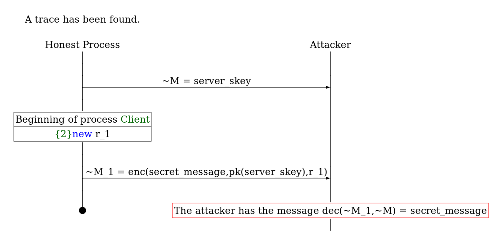

ProVerif supports modeling and verifying a wide-range of protocols and properties.
State correspondence, secrecy, and equivalence properties.
Defining the security propertyProVerif supports a wide class of protocols, typically modeled using the applied-pi calculus.
Cryptographic primitives are defined using rewrite rules or equations. Support includes shared- and public-key cryptography (encryption and signatures), hash functions, and Diffie-Hellman key agreements.
(* randomized asymmetric encryption *) type skey. type pkey. fun pk(skey): pkey. fun enc(bitstring, pkey, bitstring): bitstring. (* rewrite rule to model the decryption *) reduc forall m: bitstring, k: skey, r: bitstring; dec(enc(m, pk(k), r), k) = m.
Modeling of randomized asymmetric encryption. Decryption is specified using a rewrite rule, and returns the message m.
Roles of the protocols are modeled as processes, which perform computations or exchange messages.
Shared functionality can be encapsulated in functions, macros, and libraries, which avoids code duplication.
(* declare global variables *) free public_channel: channel. free secret_message: bitstring [private]. free server_skey: skey [private]. (* define the roles of the process *) let Client() = new r: bitstring; let e = enc(secret_message, pk(server_skey), r) in out(public_channel, e). let Server() = in(public_channel, e: bitstring); let m = dec(e, server_skey). (* launch the protocol *) process Server() | Client()
The client encrypts a secret message under the server's public key.
ProVerif can prove both trace and privacy properties.
Secrecy proves the adversary cannot obtain the secret. Strong secrecy proves the adversary cannot observe a difference when the secret changes.
(* query is true *) query attacker(secret_message) ==> false. (* launch the protocol *) process Server() | Client()
The query is true as the adversary cannot recover the secret message out of the ciphertext.
Correspondence queries prove a relation between events or facts. Both injective and temporal variants are supported.
event Decrypted(bitstring). (* publish the decrypted message *) let Server2() = in(public_channel, e: bitstring); let m = dec(e, server_skey) in event Decrypted(m); out(public_channel, m). (* query is true *) query attacker(secret_message) ==> event(Decrypted(secret_message)). (* launch the protocol *) process Server2() | Client()
The query is true as whenever the adversary knows the secret message, the server has decrypted it before.
Equivalence shows that processes indistinguishable by the adversary. ProVerif focuses mainly on processes that differ only by terms (diff-equivalence).
free message_1: bitstring. free message_2: bitstring. let Client2() = new r_1: bitstring; let e_1 = enc(message_1, pk(server_skey), r_1) in new r_2: bitstring; let e_2 = enc(message_2, pk(server_skey), r_2) in out(public_channel, diff[e_1, e_2]). (* launch the protocol *) process Client2()
Observational equivalence is true, as the adversary cannot decrypt, and hence cannot observe that the plaintext is different.
ProVerif gives you one of the following three outputs:
true:
The property is fulfilled. ProVerif is proven to be sound.
Query not attacker(secret_message[]) is true.
Output when secrecy or correspondence query can be proved.
Observational equivalence is true.
Output when (diff-)equivalence can be proved.
cannot be proved:
ProVerif cannot determine whether the property is true or false. It displays a derivation of the contradicting clause but it is unable to find an attack from this derivation.
To demonstrate this, we add a key compromise to our protocol.
(* launch the protocol with key compromise *) process out(public_channel, server_skey); Client()
Due to the key compromise, the attacker can recover the secret message.
Process 0 (that is, the initial process): {1}out(public_channel, server_skey); {2}new r: bitstring; {3}let e: bitstring = enc(secret_message,pk(server_skey),r) in {4}out(public_channel, e)
The complete process that is considered by ProVerif.
1. The message server_skey[] may be sent to the attacker at output {1}. attacker(server_skey[]). 2. The message enc(secret_message[],pk(server_skey[]),r[]) may be sent to the attacker at output {4}. attacker(enc(secret_message[],pk(server_skey[]),r[])). 3. By 2, the attacker may know enc(secret_message[],pk(server_skey[]),r[]). By 1, the attacker may know server_skey[]. Using the function dec the attacker may obtain secret_message[]. attacker(secret_message[]). 4. By 3, attacker(secret_message[]). The goal is reached, represented in the following fact: attacker(secret_message[]).
The derivation of an attack found by ProVerif.
false:
ProVerif found an attack, and could reconstruct the trace on the procotol model.
Both the derivation and the attack trace are displayed.
out(public_channel, ~M) with ~M = server_skey at {1} new r: bitstring creating r_1 at {2} out(public_channel, ~M_1) with ~M_1 = enc(secret_message,pk(server_skey),r_1) at {4} The attacker has the message dec(~M_1,~M) = secret_message. A trace has been found.
A reconstructed trace of an attack found by ProVerif.

ProVerif may also visualize the attack via the -html output.